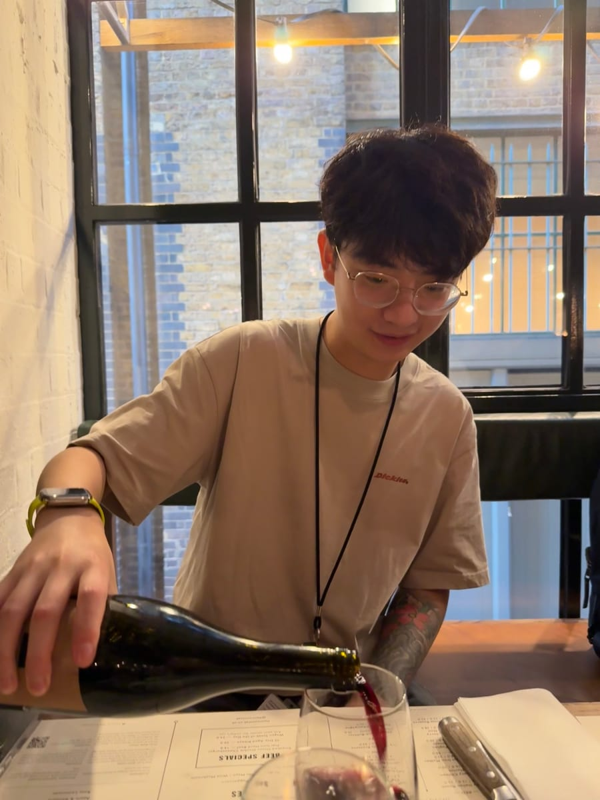

Research Assistant
Synergistic Innomedicine (Tianjin) Biotechnology Co., Ltd.
Full-time · Nov 2023 – Jun 2024
Tianjin, China · On-site
Pre-clinical Studies · Animal Models

PhD Student in Neuroscience
Wolfson SPaRC · King's College London
London, England, United Kingdom
I am a PhD student at Wolfson SPaRC, King's College London, funded by KCL–CSC sponsorship.
Pharmacology · Clinical Research · Animal Models · In Vitro · Laboratory Skills
Synergistic Innomedicine (Tianjin) Biotechnology Co., Ltd.
Full-time · Nov 2023 – Jun 2024
Tianjin, China · On-site
Pre-clinical Studies · Animal Models
Tianjin Biosci Medical and Technology Co., Ltd.
Full-time · Aug 2023 – Oct 2023
Tianjin, China · On-site
Animal Physiology · Animal Models
Shijiazhuang Anteng Technology Co., Ltd.
Internship · Dec 2021 – Feb 2022
Shijiazhuang, Hebei, China · On-site
Toxicology · Pharmacology
PhD, Neuroscience
MSc, Clinical Pharmacology
Sep 2024 – Sep 2025
BSc, Pharmaceutics
Sep 2019 – Jun 2024

Research image archive

Previous portrait